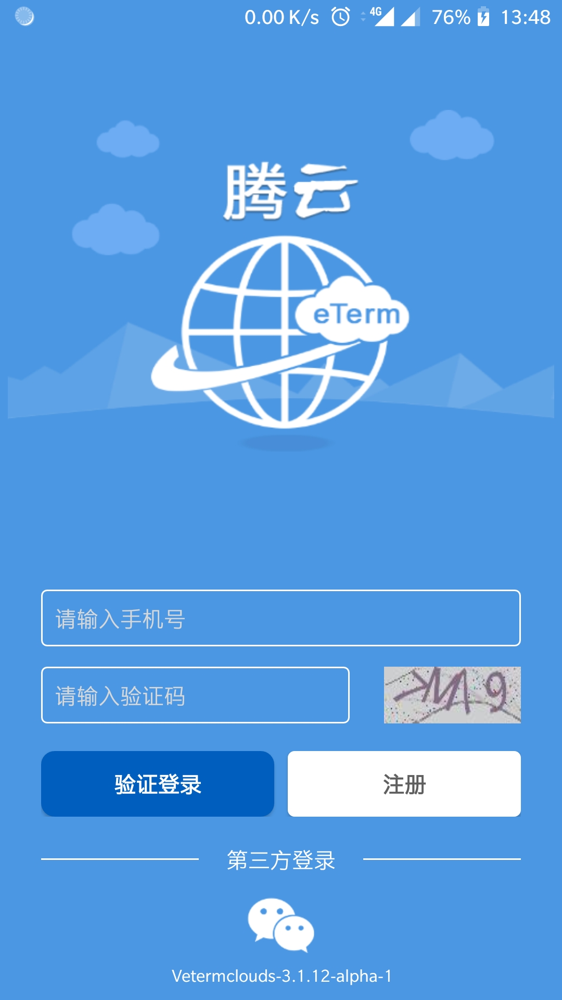
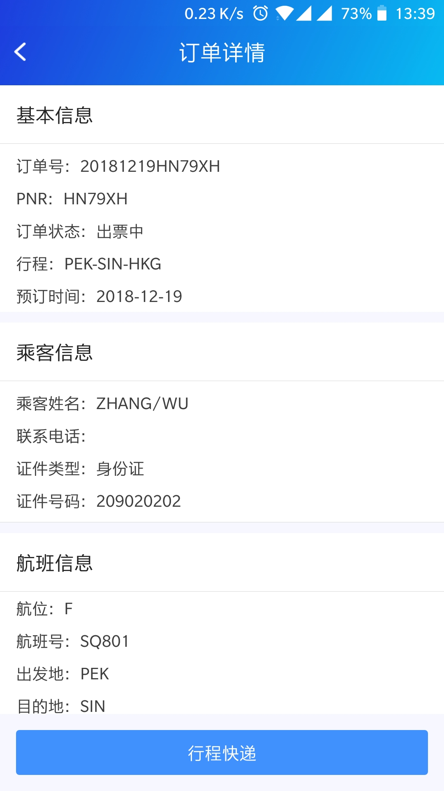

eTermapp 用了一年——手机端的航信指令终端到底值不值得长期留着
从只会 SI 登录到能独立完成查询、出票、退改全套操作，这篇长期使用报告聊聊 eTermapp 这一年里哪些地方越用越顺手、哪些地方慢慢暴露出问题。
去年冬天我第一次从eTermapp官网把它装到手机上，起因是有个周末客户临时改行程，我在家翻了半天才找到一台装了桌面端的旧笔记本。那次折腾完我就决定：航信终端必须有个移动端备份。
装完之后第一周基本是在熟悉流程——SI 登录要输工作号、密码、工作区，比桌面端多了几次确认；指令行输入因为屏幕窄，经常按错数字键；PVGPEK/20OCT 这种城市对日期格式敲起来远不如键盘顺手。当时的感觉就是：能用，但没到离不开的程度。
哪些地方越用越顺手
会话管理这块是变化最大的。刚上手的时候我跟大多数新人一样，操作完就 SO 退出，下次用再 SI 重新登录。航信的 PID 是有限资源，高峰期重新 SI 经常要排队等几十秒。后来慢慢养成了习惯：短时间离开用 AO 临时下线，回来 AI 恢复，PID 保留不释放——整个流程不到两秒。现在 AO/AI 成了我每天必敲的指令，反而是 SO 只在彻底下班时才用。

其次是指令的肌肉记忆。FV:PEKSHA/20OCT/0600/1 这种查询最早有座航班的指令，现在不用想就能敲出来。刚开始总觉得 FV 和 AV 功能重复，后来发现旅客说"越早能走越好"的时候，FV 直接跳过无座航班从最早开始筛，比 AV 逐页翻高效不止一倍。
从官方下载拿到安装包时我没太注意端口配置，端口切换也从模糊变得清晰了。350 专线和 443 公网 HTTPS 的区别，我是用了小半年才真正搞明白：公司工位有专线，延迟低、响应快，但只能在桌面端用；手机端走 443，只要有网就能登，弱网时偶尔需要重试，但应急场景下没有替代品。现在我基本不纠结端口配置了——桌面是 350、手机是 443，两套工作流互不干扰。
哪些地方越用越烦
PID 被抢的问题至今没解决。航信分配给每个公司的 PID 池是固定的，高峰期（比如早班机出港时段）经常遇到 SI 返回"PID 不足"的情况。手机端没有桌面端的地址认证，每次登录都要走密码验证，高峰期排队更久。有次我在外面试了二十分钟才登上，最后还是让同事在工位用专线帮我查的。
XE 取消的操作纪律也是踩过坑才记住的。刚上手时以为 XE:PNR编号@ 是万能取消，结果有次在有 SSR TKNE 票号的已出票 PNR 上直接 XE，航信拒绝执行不说，还触发了风险预警。后来才搞清楚：未出票可以直接 XE，已出票必须先 ETRF 退票、确认票号清除后再 XE。这个规则后来去etermapp文档翻了一下才记牢，但手机端操作时屏幕小，很容易一眼漏掉 RT 返回里的 SSR 项。
哪个功能成了每天离不开的
还是 FV。之前总觉得"查最早航班"是个低频场景，其实客户说"我今天就要走"的时候比想象中多。FV 一条指令直接把可订的最早航班拉出来，不用在 AV 的长列表里挨个看哪个有座位。搭配座位数参数，遇到多人出行也不用来回试。

反而是一开始最期待的 SIIF 状态查询，现在碰都没再碰过——因为会话管理熟了之后，AO 下线、AI 恢复的状态在指令行顶端一目了然，专门 SIIF 查一次纯属多余。
时间修正了哪些判断
当初我以为手机版就是桌面版的缩水替代品，只是应急用的备份。用了一年下来发现反直觉的地方很多：443 端口虽然依赖公网，但它的便携性让我能在去机场的路上帮客户改签；指令行输入虽然慢，但 FV 这种针对性指令在移动端反而比桌面端更方便——因为我通常是单任务操作，不会像桌面端那样同时开多个订单窗口。
还有一个判断被修正的是"共享工作号"。刚入职时听说同事们共用 O 账号，觉得这种方式迟早要出事。但实际用下来，规范 AO/SO 之后其实还行——用完立即 SO 让出来，短时间离开用 AO 保留，基本不会出现互相踩 PID 的情况。
去留结论
eTermapp 我不会卸载。
真正让我考虑换掉的信号可能有两个：一是航信如果推出了真正支持移动端的专线接入方式，那 443 的重连问题可能需要重新评估；二是如果出现了比指令行更直觉化的操作界面（比如直接点选航班座位），但我目前看不到这种迹象——航信的指令体系稳定了快二十年，短期内不太可能动。
总结下来，这个 App 的定位很清晰：桌面端的备份和延伸，而不是替代品。用对了场景它能省很多事，用错了（比如想在手机端处理复杂 PNR 修改）那就是自找苦吃。一年前我装它是应急，现在它是我每天打开的第五个 App——排在微信、钉钉、日历、航旅纵横之后。
整理这套航信指令的资料花了不少时间，文档、样本和操作示例我同步放在三个仓库里了，方便随时查阅：GitHub、Gitee、GitCode。